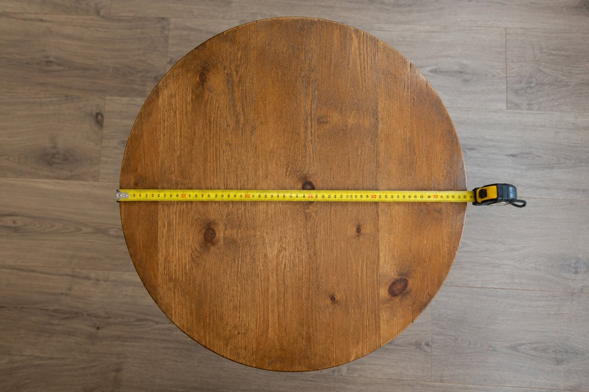

동그란 원의 넓이는 어떻게 구할까?

피자나 시계처럼 동그란 모양은 네모 칸으로 넓이를 세기 어려워요. 원을 잘게 잘라 다시 붙이면 넓이를 구하는 방법이 보여요.
원주와 원주율
원의 둘레를 원주라고 해요. 원의 크기가 달라도 원주는 항상 지름의 약 3.14배예요.
지름에 대한 원주의 비율을 원주율이라고 해요. 원주율은 3.1415926…처럼 끝없이 이어지는 수라서 필요에 따라 3, 3.1, 3.14 등으로 어림해서 써요.
원주율 = 원주 ÷ 지름 ≈ 3.14
원주 구하기
원주율 = 원주 ÷ 지름이므로 원주 = 지름 × 원주율이에요. 반지름이 주어지면 지름은 반지름 × 2예요.
지름이 10cm인 원의 원주는 10 × 3.14 = 31.4cm예요. 거꾸로 원주를 알면 지름 = 원주 ÷ 원주율로 구할 수 있어요.
지름 10cm → 원주 10 × 3.14 = 31.4cm
원을 잘라 직사각형 만들기
원을 피자처럼 아주 잘게 잘라 위아래로 엇갈리게 붙이면 직사각형에 가까워져요.
이 직사각형의 가로는 원주의 반(지름 × 원주율 ÷ 2 = 반지름 × 원주율), 세로는 반지름이에요. 그래서 원의 넓이 = 반지름 × 반지름 × 원주율이에요.
원의 넓이 = (반지름 × 원주율) × 반지름 = 반지름 × 반지름 × 원주율
이렇게 풀어요: 원의 넓이 구하기
반지름이 5cm인 원의 넓이(원주율 3.14): ① 반지름 × 반지름 = 5 × 5 = 25. ② 25 × 3.14 = 78.5. 답은 78.5cm²예요.
지름이 주어지면 먼저 반으로 나눠 반지름을 구해요. 지름 8cm → 반지름 4cm → 4 × 4 × 3.14 = 50.24cm²예요.
반지름 5cm → 78.5cm², 지름 8cm → 반지름 4cm → 50.24cm²
핵심 낱말
- 원주
- 원의 둘레
- 지름
- 원의 중심을 지나 원 위의 두 점을 이은 선분
- 반지름
- 원의 중심과 원 위의 한 점을 이은 선분, 지름의 반
- 원주율
- 지름에 대한 원주의 비율, 약 3.14
- 원의 넓이
- 반지름 × 반지름 × 원주율
한 줄 정리
- 원주율은 지름에 대한 원주의 비율로 약 3.14예요.
- 원주 = 지름 × 원주율이에요.
- 원의 넓이 = 반지름 × 반지름 × 원주율이에요.
학교 교육과정 연결
- [6수03-15] 여러 가지 원 모양 물체의 원주와 지름을 측정하는 활동을 통하여, 원주율이 일정한 값임을 알고 그 근삿값을 사용할 수 있다.
- [6수03-16] 원주와 원의 넓이를 구하는 방법을 이해하고, 이를 구할 수 있다.